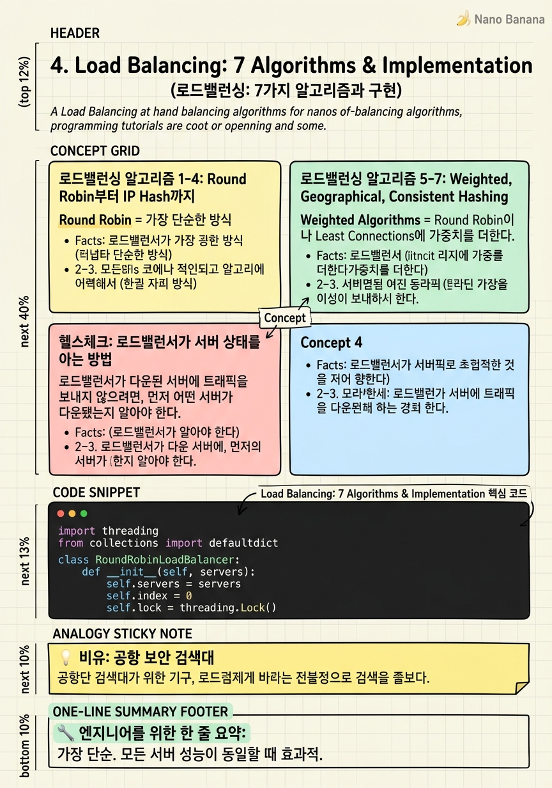

Load Balancing: 7 Algorithms & Implementation

🎯 학습 목표
- 로드밸런서의 역할과 동작 원리를 설명할 수 있다
- 7가지 로드밸런싱 알고리즘을 상황에 맞게 선택할 수 있다
- Consistent Hashing이 왜 샤딩과 캐싱에서 중요한지 이해한다
- 소프트웨어(Nginx), 하드웨어(F5), 클라우드(AWS ELB) LB의 차이를 안다
- 헬스체크가 로드밸런서에서 어떻게 동작하는지 설명할 수 있다
수평으로 확장된 서버들이 있다. 그런데 클라이언트는 어느 서버에 요청을 보내야 할지 모른다. 이 문제를 해결하는 것이 로드밸런서다. 로드밸런서는 모든 요청을 받아서 가장 적절한 서버로 전달한다 — 마치 교통 경찰관처럼.
단순히 트래픽을 나누는 것 이상으로, 로드밸런서는 시스템의 신뢰성을 높이는 핵심 컴포넌트다. 서버 하나가 다운되면 자동으로 해당 서버에 트래픽을 보내지 않고, 살아있는 서버들로만 요청을 분배한다. 이를 위해 헬스체크(Health Check) 를 지속적으로 수행한다.
로드밸런서의 가장 중요한 역할은 세 가지다: ① 트래픽 분산으로 과부하 방지, ② 장애 서버 자동 제외로 가용성 향상, ③ 새 서버 추가를 클라이언트 변경 없이 가능하게 함. 이 챕터에서는 로드밸런서가 어떤 알고리즘으로 트래픽을 분배하는지, 그리고 실제로 어떻게 구현하는지 배운다.
핵심 내용
로드밸런싱 알고리즘 1-4: Round Robin부터 IP Hash까지
Round Robin = 가장 단순한 방식. 요청이 들어올 때마다 서버 1, 2, 3 순서로 돌아가며 배분한다. 서버 3 이후에는 다시 1로 돌아간다. 모든 서버의 성능이 동일할 때 가장 효과적이다. 구현이 단순하고 예측 가능하다.
Least Connections = 현재 활성 연결이 가장 적은 서버로 트래픽을 보낸다. 서버 1에 10개, 서버 2에 9개, 서버 3에 30개의 활성 연결이 있다면, 다음 요청은 서버 2로 간다. 세션 길이가 가변적인 서비스(파일 업로드, 스트리밍)에 특히 유용하다. 짧은 요청과 긴 요청이 섞여 있을 때 Round Robin보다 균등한 부하 분산을 실현한다.
Least Response Time = 응답 시간이 가장 빠르고 활성 연결이 적은 서버를 선택한다. 서버의 성능과 현재 부하를 모두 고려해 사용자에게 가장 빠른 응답을 제공한다. 다양한 사양의 서버가 혼재하는 환경에서 효과적이다.
IP Hash = 클라이언트 IP 주소를 해시해 항상 같은 서버로 라우팅한다. 클라이언트 A의 모든 요청은 항상 서버 2로, 클라이언트 B의 모든 요청은 항상 서버 3으로 간다. 서버가 클라이언트별 상태를 로컬에 캐싱할 때 유용하다. 단, 특정 IP가 집중되면 해당 서버에 과부하가 생길 수 있다.
로드밸런싱 알고리즘 5-7: Weighted, Geographical, Consistent Hashing
Weighted Algorithms = Round Robin이나 Least Connections에 가중치를 더한다. 서버 1이 16GB RAM, 서버 2가 32GB RAM이면, 서버 2에 2배의 가중치를 부여해 2배 더 많은 요청을 보낸다. 다양한 사양의 서버를 혼합 운영할 때 각 서버의 실제 처리 능력을 반영할 수 있다.
Geographical Algorithms = 사용자의 지리적 위치를 기반으로 가장 가까운 서버로 라우팅한다. 미국 사용자는 US-East 서버로, 유럽 사용자는 Europe 서버로. 네트워크 레이턴시를 줄이는 데 효과적이다. CDN(Content Delivery Network)의 기본 원리와 같다. 글로벌 서비스에서 지연 시간 감소에 직접적으로 기여한다.
Consistent Hashing = 가장 정교한 알고리즘. 서버들을 해시 링(Hash Ring) 위에 배치하고, 요청을 해시한 값에 가장 가까운 서버로 라우팅한다. 핵심 장점은 서버 추가/제거 시 영향받는 키의 비율이 최소화된다는 것이다. 일반 해시(key % N)로 10대 서버 중 1대가 추가되면 거의 모든 키가 다른 서버로 재배치된다. Consistent Hashing은 1/N의 키만 이동한다. 분산 캐시(Redis Cluster), 분산 데이터베이스 샤딩에 필수적으로 사용된다.
헬스체크: 로드밸런서가 서버 상태를 아는 방법
로드밸런서가 다운된 서버에 트래픽을 보내지 않으려면, 먼저 어떤 서버가 다운됐는지 알아야 한다. 이것이 헬스체크의 역할이다.
로드밸런서는 주기적으로(보통 5~30초마다) 각 서버의 헬스체크 엔드포인트(/health 또는 /ping)에 HTTP 요청을 보낸다. 서버가 200 OK로 응답하면 정상, 응답이 없거나 5xx 에러면 비정상으로 판단한다.
비정상으로 판단된 서버는 풀(Pool)에서 즉시 제외된다. 이후 헬스체크에서 다시 정상 응답을 보내면 자동으로 풀에 복귀한다. 이 과정이 자동화되어 있어 운영자가 수동으로 개입할 필요가 없다.
헬스체크 엔드포인트는 단순한 /health가 아니어야 한다. 서버 프로세스가 살아있더라도 데이터베이스 연결이 끊어져 있다면 실질적으로 서비스 불가 상태다. 따라서 헬스체크에서는 DB 연결, 캐시 연결, 의존 서비스 등 핵심 의존성을 함께 확인해야 한다.
소프트웨어 LB: Nginx(가장 일반적), HAProxy(오픈소스, 고성능)
하드웨어 LB: F5, Citrix (엔터프라이즈 환경, 매우 고성능, 고가)
클라우드 LB: AWS ELB(Elastic Load Balancer), GCP Load Balancer, Azure Load Balancer (Auto Scaling, 헬스체크, 보안 자동 지원)
💡 비유로 이해하기
로드밸런서는 공항 보안 검색대 운영자와 같다. 보안 구역 앞에 서서 여러 개의 검색대 중 줄이 가장 짧은 곳으로 승객들을 안내한다. 이것이 Least Connections 알고리즘이다.
VIP 승객(헤비 유저)을 항상 같은 검색대로 안내해 해당 검색 요원이 그 승객의 특성을 잘 파악하도록 하는 것은 IP Hash다. 어떤 검색대가 고장났다면(서버 다운) 그쪽으로 승객을 보내지 않는 것이 헬스체크다.
Consistent Hashing은 더 정교하다. 검색대 하나가 새로 열리거나 닫힐 때, 최소한의 승객만 다른 검색대로 이동시킨다. 일반적인 방법으로는 새 검색대가 열릴 때 거의 모든 줄을 재배치해야 하지만, Consistent Hashing은 1/N의 승객만 이동한다 — 혼란을 최소화한다.
💻 코드 예시
Round Robin과 Least Connections 알고리즘을 순수 Python으로 구현해 보자. 실제 프로덕션에서는 Nginx나 AWS ELB를 사용하지만, 알고리즘 자체를 구현해보면 내부 동작을 명확히 이해할 수 있다.
import threading
from collections import defaultdict
class RoundRobinLoadBalancer:
def __init__(self, servers):
self.servers = servers
self.index = 0
self.lock = threading.Lock()
def get_server(self):
with self.lock: # 동시성 안전
server = self.servers[self.index]
self.index = (self.index + 1) % len(self.servers)
return server
class LeastConnectionsLoadBalancer:
def __init__(self, servers):
self.servers = servers
# 각 서버의 현재 활성 연결 수 추적
self.connections = defaultdict(int)
self.lock = threading.Lock()
def get_server(self):
with self.lock:
# 활성 연결이 가장 적은 서버 선택
server = min(self.servers, key=lambda s: self.connections[s])
self.connections[server] += 1
return server
def release(self, server):
with self.lock:
self.connections[server] = max(0, self.connections[server] - 1)
# 테스트
servers = ['server1:8080', 'server2:8080', 'server3:8080']
rr = RoundRobinLoadBalancer(servers)
lc = LeastConnectionsLoadBalancer(servers)
print("Round Robin:", [rr.get_server() for _ in range(6)])
# Least Connections 시뮬레이션: server1에 인위적 부하
lc.connections['server1:8080'] = 10
lc.connections['server2:8080'] = 2
print("Least Conn:", lc.get_server()) # server2 선택threading.Lock()은 여러 스레드가 동시에 index를 수정하는 경쟁 조건(Race Condition)을 방지한다. defaultdict(int)는 처음 접근하는 서버 키에 자동으로 0을 할당해 초기화 코드를 줄인다. release() 메서드는 요청 처리가 완료되면 연결 수를 감소시킨다 — 실제 LB는 TCP 연결 종료 이벤트를 감지해 이를 자동 처리한다.
🏭 현업에서의 평가
✅ 시니어가 보는 것
- 서비스 특성(세션 길이, 서버 균일성)에 맞는 알고리즘을 선택하는가
- 로드밸런서 자체가 SPOF가 되지 않도록 이중화를 고려하는가
- L4(TCP/UDP 레벨) vs L7(HTTP 레벨) 로드밸런싱의 차이를 아는가
- Sticky Session이 왜 문제가 되고 어떻게 피하는가
⚠️ 레드 플래그
- 로드밸런서 자체를 단일 구성으로 설계 (SPOF)
- Sticky Session으로 무상태 설계 원칙 위반
- Consistent Hashing을 모름 (분산 시스템 면접에서 자주 나옴)
- 헬스체크 누락
🎤 예상 인터뷰 질문
- Consistent Hashing은 언제 일반 해시보다 유리한가요? Redis 클러스터에서 어떻게 사용되나요?
- 로드밸런서 자체가 SPOF가 되면 어떻게 해결하겠습니까?
- L4 로드밸런서와 L7 로드밸런서의 차이점과 각각의 사용 사례는 무엇인가요?
✨ 핵심 요약
Round Robin
가장 단순. 모든 서버 성능이 동일할 때 효과적.
Least Connections
세션 길이가 가변적일 때 균등 부하 분산에 최적.
IP Hash
같은 클라이언트를 항상 같은 서버로 — 서버 로컬 캐시 활용 시.
Consistent Hashing
서버 추가/제거 시 최소 키 이동 — 분산 캐시와 DB 샤딩의 핵심.
헬스체크 필수
LB는 주기적으로 /health를 호출해 비정상 서버를 자동으로 풀에서 제외한다.
LB의 SPOF 문제
로드밸런서 자체도 이중화(Active-Passive 또는 Active-Active)해야 한다.
클라우드 LB의 편리함
AWS ELB는 Auto Scaling, 헬스체크, SSL Termination을 자동으로 처리한다.